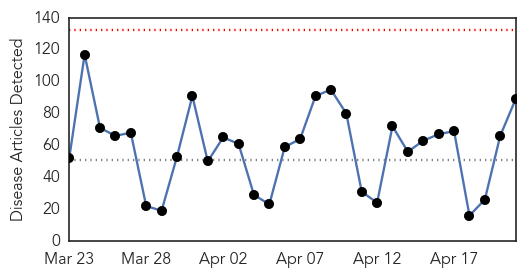
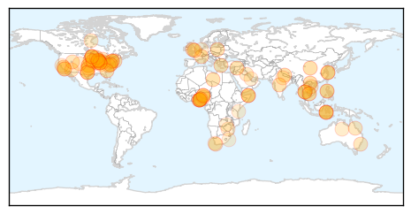
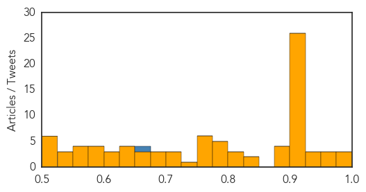
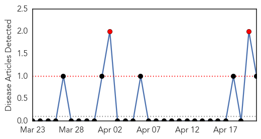
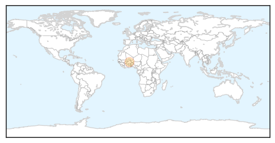

Unknown
30-Day Web Trend
0 alerts, 0 warnings

30-Day Twitter Trend
0 alerts, 0 warnings

Article Locations
Article Confidences
Top Articles:
- 0.998
- Flu season is hitting hard in the majority of states, could peak later this month
- 0.987
- Flu Epidemic Flares as Government Remains Indifferent
- 0.977
- Victims of Nigeria’s strange disease to be buried in body bags
- 0.972
- Strong link to methanol contaminated gin in Nigerian deaths
- 0.955
- Unidentified disease outbreak not infectious
- 0.952
- Nigerian Mystery Illness Likely Just Tainted Gin, WHO Says
- 0.933
- Scientists still can't explain avian flu spread
- 0.928
- H.I.V. Cases Lead Indiana to Extend Needle Exchanges
- 0.925
- Minister of Health To Nigerians: Unidentified Disease Outbreak Not Infectious
- 0.917
- Chicago Tribune
- 0.917
- Chicago Tribune
- 0.917
- Chicago Tribune
- 0.917
- Chicago Tribune
- 0.917
- Chicago Tribune
- 0.917
- Chicago Tribune
- 0.917
- Chicago Tribune
- 0.917
- Chicago Tribune
- 0.917
- Chicago Tribune
- 0.917
- Chicago Tribune
- 0.917
- Chicago Tribune
- 0.917
- Chicago Tribune
- 0.917
- Chicago Tribune
- 0.917
- Chicago Tribune
- 0.917
- Chicago Tribune
- 0.917
- Chicago Tribune
- 0.917
- Chicago Tribune
- 0.917
- Chicago Tribune
- 0.917
- Chicago Tribune
- 0.917
- Chicago Tribune
- 0.917
- Chicago Tribune
- 0.917
- Chicago Tribune
- 0.917
- Dog Flu Affecting Dogs in Midwest :: Norwalk, CT
- 0.915
- Mysterious ailment in Nigeria kills victims within hours; 18 dead
- 0.910
- The world windows to Thailand
- 0.903
- Vet says dog flu in Iowa is ‘definite possibility’
- 0.894
- Nigeria: Unidentified disease outbreak not infectious - Minister of Health assures Nigerians
- 0.892
- First case of rabies in over a decade
- 0.888
- Ancon Medical Disease Screening Device Shows Promise for Lyme Disease
- 0.888
- Borders General Hospital: Norovirus shuts elderly department
- 0.849
- Experts Debate Destroying Last Smallpox Viruses
- 0.837
- First case of rabies in over a decade: Lessons for health-care personnel
- 0.810
- Salmonella Outbreak in Santa Barbara, Ventura Counties
- 0.809
- Raw fish linked to Salmonella outbreak in California
- 0.802
- News, Weather, Sports, Breaking News
- 0.798
- Bird flu found at Iowa farm
- 0.795
- Will County officials: Be on alert for canine flu
- 0.793
- New research points to elderly as growing contributor to tuberculosis in China
- 0.787
- Gonorrhea Cases Surging in Utah
- 0.779
- Blue Bell Recalls All Its Products After More Listeria Found
- 0.771
- Dog flu warnings issued
Showing top 50 articles...
Top Tweets:
- 0.671
- 2014 outbreak of MERS in Saudi Arabia linked to healthcare facilities, shows need for adherence to infection control precautions CDCEIS15
- 0.554
- Invertir en el futuro. Derrotar la malaria. Evento en Colombia este jueves, 23 de abril. worldmalariaday2015 https://t.co/wjXFwui3gX
Yellow Fever
30-Day Web Trend
2 alerts, 0 warnings

30-Day Twitter Trend
0 alerts, 0 warnings

Article Locations
Article Confidences

Top Articles:
Top Tweets:
-
No tweets found for Apr 21, 2015